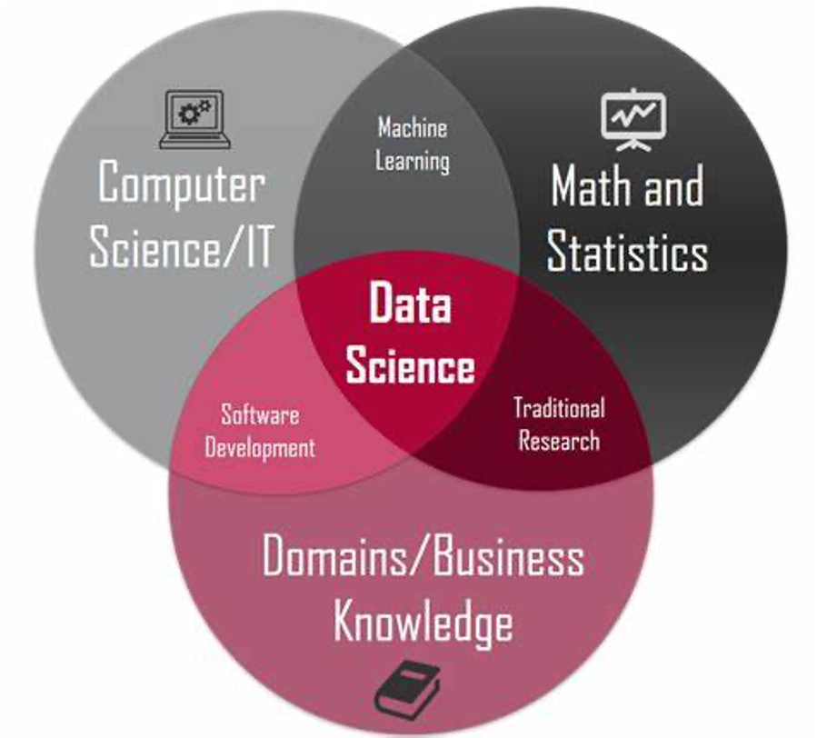
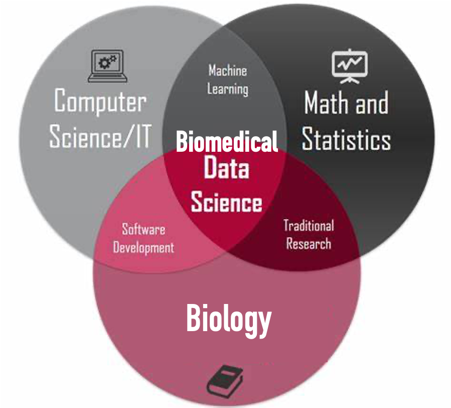
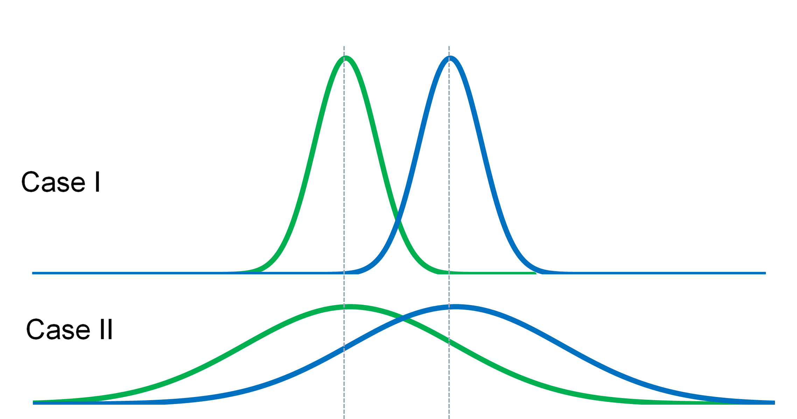

## {{ page.title }}
---
## Outline
- Statistical models
- Hypothesis testing
- Some useful tests
- P-values
- Multiple testing corrections
- Confusion matrix
- Receiver-operating characteristic (ROC)
- Precision recall curve (PRC)
---
## Data Science

---
## Computational Biology

---
## Why Statistics is important
- Statistics is the theoretical foundation of data science
- Statistics is the bridge between experiments and theories
- Statistics links microscopic and macroscopic worlds
---
## What is a Model?
---
## Models
- Quantitative/mathematical models
- describe the relationship between quantities.
- Statistical models
- relationship between random variables.
---
### Hypothesis testing
- General thinking:
- Are they different?
- Is the difference "statistically significant"?
- Statistical thinking:
- Null hypothesis
- Alternative hypothesis

---
## P-values
---
## T-test
---
## Fisher's Exact Test
---
## Wilcoxon Rank-Sum Test (Mann–Whitney U Test)
---
## K-S Test
---
Which of the following statements about P-values is true?
- A. P-values measure how big the difference is between the datasets compared.
- B. P-value is the probability of observing the data by random chance.
- C. P-value is the least probability of observing the data under the assumption that the null hypothesis is true.
---
### ASA Statement on Statistical Significance and P-Values
- 1. P-values can indicate how incompatible the data are with a specified statistical model.
- 2. P-values do not measure the probability that the studied hypothesis is true, or the probability that the data were produced by random chance alone.
- 3. Scientific conclusions and business or policy decisions should not be based only on whether a p-value passes a specific threshold.
- 4. Proper inference requires full reporting and transparency.
- 5. A p-value, or statistical significance, does not measure the size of an effect or the importance of a result.
- 6. By itself, a p-value does not provide a good measure of evidence regarding a model or hypothesis.
---
## Multiple Testing Correction
---
### B-H correction
---
## Confusion Matrix
---
## Sensitivity and Specificity
---
## ROC
---
## AUROC
---
## Precision-Recall
---
## Contact
- zanglab.org
- zang@virginia.edu